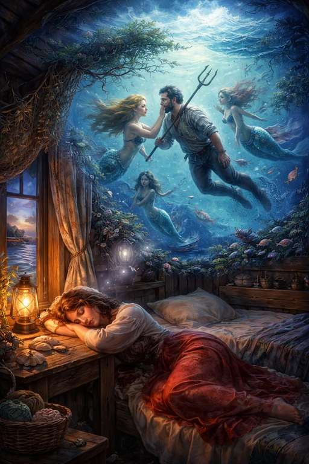

Сон Жены Рыбака
❦
...Где Свет Любви и Тьма Полной Свободы
Учат тому, что должно быть понятно -
Что нет в Свободе ни цели ни смысла,
Если она - не Свобода Влюбиться -
И быть любимым в ответ очень жарко.
И нет ни правды, ни цели Любовью
Быть окрыленным, влюбившись в "жестянку" -
В куклу, которая внешностью, вроде
Женщина, и даже чувства имеет.
Но для нее, половое влеченье -
Способ торговли, охоты, контроля,
А Свет не терпит к Себе отношенья
Как к инструменту в руках бизнесмена**А Свет терпит к Себе отношение, как к Творцу, Свят Благословен Он, волю Которого выполняет тот, кто им обладает..
Или к той "рыбке", что "дед" поймал в море*См также: Пушкин Александр Сергеевич, «Сказка о рыбаке и рыбке»..
Думать "своим умом", в целом по жизни,
С тех самых пор, как женился на "бабке",
Не начинал, чтобы не поплатиться, -
Т.к. иначе, он "рыбке" сказал бы:
"Ты плыви в море, и не попадайся."
"Я давно в жизни не жду того шанса,"
"Что был, но я разменял, сделав выбор"
"В пользу того, что не страшно и просто"
"И что 'в народе' бы выбрали так же".
"Ты потеряешь лишь время и силы,"
(Те три желанья моих выполняя),
"А я вдобавок ударов от бабки."
"И прочих трудностей в той личной жизни,"
"Где я владею разбитым корытом."
Рыбка ему лишь глазком подмигнула
И удалилась, крутя плавниками.
А старик было поплелся до дома,
Но, полпути лишь пройдя, развернулся,
И вышел в поле, уйдя восвояси
Чтобы ни разу в той жизни ни встретить
Рыбку, старуху, и сделанный выбор
Из-за которого пол-жизни в мусор.
Рыбка, однако, его не забыла
И из подводного своего Замка
Где Ей открыты дела всего мира
Три раза Деду, исполнив желанье
Им в виде принятых тихо решений,
Что он жить будет вот так-то и так-то.
И что вот это вот будет он делать.
Дед, лишь состарившись очень, успешно
Жизнь обустроив и снова женившись
На этот раз была доброй и кроткой
Его любимая и он, влюбившись,
Тут же узнал, что любим ей ответно
(Тут, не подумайте, Рыбка бессильна :)
И вот, когда вспоминал годы жизни
Понял - без помощи Золотой Рыбки
В самом начале, с уходом от "бабки"
(Чтобы он сам это принял решенье)
И потом, скрыто, тех самых три раза -
Он бы не смог того счастья добиться
И вслух сказал ей "Большое спасибо".
Примечания
*См также:
Пушкин Александр Сергеевич, Сказка о рыбаке и рыбке —
culture.ru.
↩
**А Свет терпит к Себе отношение, как к Творцу, Свят Благословен Он, волю Которого выполняет тот, кто им обладает. ↩